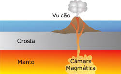
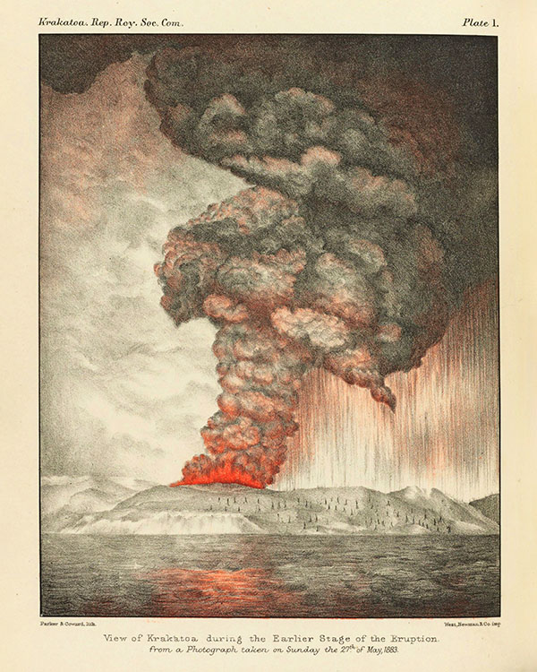
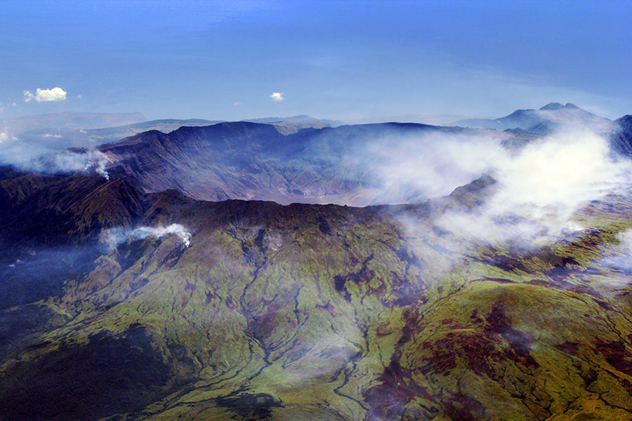
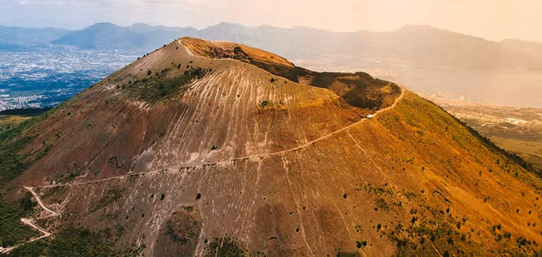
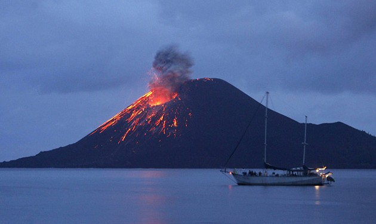
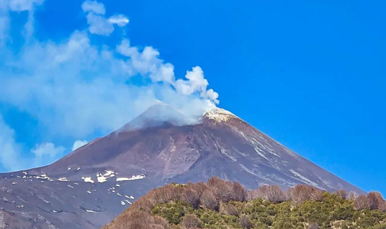
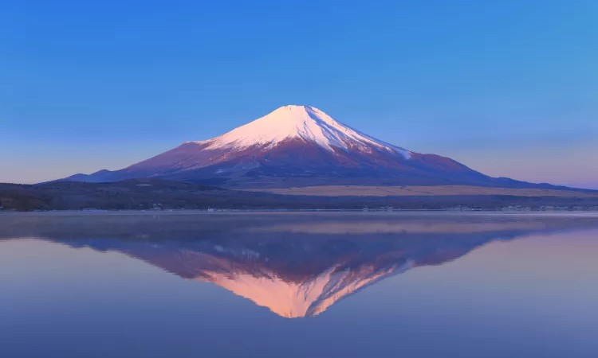
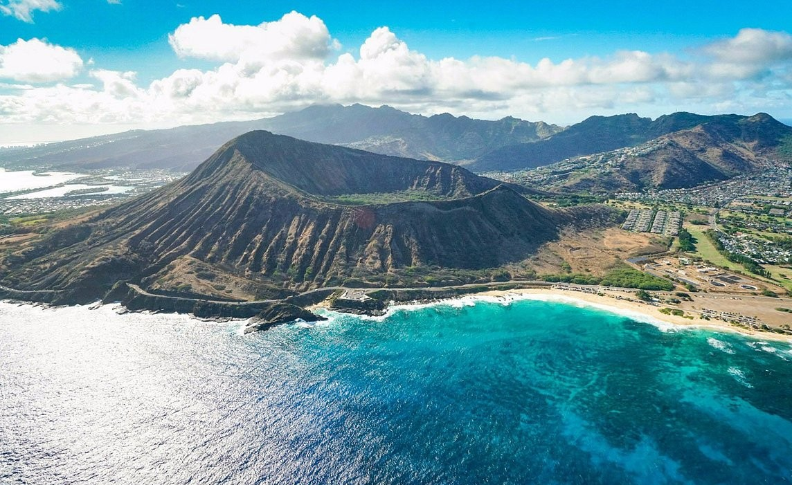
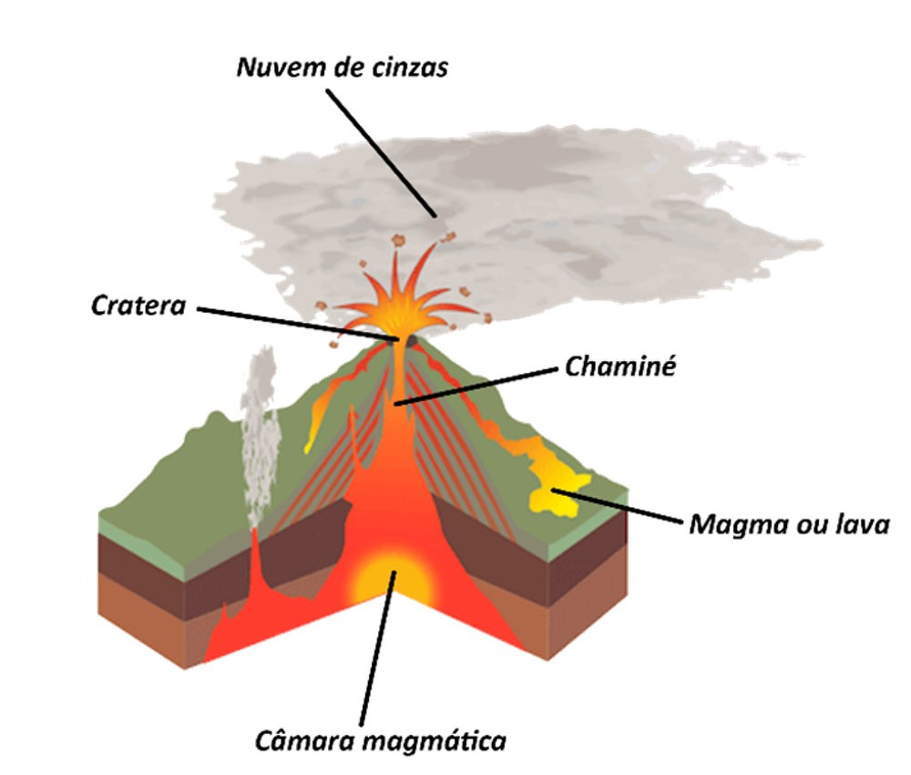

.png)
Como os Vulcões Surgiram
Os vulcões são aberturas na crosta terrestre que conectam a superfície com o interior do planeta, permitindo a saída de rocha derretida, gases e cinzas.

Os vulcões existem desde os primeiros bilhões de anos da Terra. O planeta se formou a partir de um processo de intensa fusão e calor. Conforme a superfície externa esfriou e se solidificou formando a crosta terrestre, o interior continuou extremamente quente e sob alta pressão. O surgimento de um vulcão ocorre no seguinte processo geológico:
-
Fusão de Rochas
No manto (camada abaixo da crosta), as altas temperaturas derretem as rochas, formando o magma.
-
Acúmulo e Pressão
O magma é menos denso que a rocha sólida ao seu redor, o que o faz subir e se acumular em uma câmara magmática.
-
Erupção
À medida que os gases se expandem e a pressão aumenta, o magma força fendas na crosta até romper a superfície.
-
Construção do Cone
Quando chega à superfície, o magma passa a ser chamado de lava. A cada erupção, a lava e as cinzas acumuladas esfriam e se solidificam, formando a montanha vulcânica ao longo do tempo.
Os impactos que eles já causaram no mundo ao longo da história

Ao longo da história da Terra, grandes erupções vulcânicas causaram impactos muito fortes não só no meio ambiente e no clima, mas também na vida das pessoas e até no desenvolvimento de algumas civilizações.
Um dos casos mais extremos foi a erupção do supervulcão Toba, que aconteceu há cerca de 74 mil anos, na atual Indonésia. A erupção lançou aproximadamente 2.800 quilômetros cúbicos de material na atmosfera, causando um forte resfriamento do planeta, conhecido como inverno vulcânico. Alguns estudos relacionam esse evento a uma grande redução da população humana naquela época e a um possível “gargalo genético”, embora a intensidade exata desse impacto ainda seja discutida pelos cientistas.
Muito tempo depois, em 1257, aconteceu a erupção do Samalas, também na Indonésia. Ela lançou uma enorme quantidade de enxofre na estratosfera, provocando anos de temperaturas mais baixas e mudanças nas chuvas. Essas alterações contribuíram para problemas nas plantações e períodos de fome em diferentes regiões, como Europa e Ásia, além de possíveis impactos nas sociedades da época.
Outro exemplo aconteceu entre 1783 e 1784, quando a fissura do Laki, na Islândia, liberou cerca de 120 milhões de toneladas de dióxido de enxofre e compostos de flúor. A poluição causada pela erupção provocou a morte de aproximadamente 25% da população da Islândia e cerca de 80% do gado. A nuvem de gases também chegou a outras partes da Europa, prejudicando plantações e causando problemas respiratórios. Alguns historiadores também discutem uma possível relação entre os efeitos do Laki e a instabilidade que antecedeu a Revolução Francesa.
Em 1815, aconteceu uma das maiores erupções vulcânicas dos últimos séculos: a do Monte Tambora, na Indonésia. Foram liberados cerca de 160 quilômetros cúbicos de material e grandes quantidades de enxofre na atmosfera. O resultado foi um resfriamento significativo do planeta. No ano seguinte, 1816, ficou conhecido como o “Ano sem Verão”, principalmente no Hemisfério Norte. Houve geadas e até neve durante períodos que normalmente seriam de verão, as plantações foram prejudicadas e milhares de pessoas morreram em consequência das dificuldades e da fome. Também ocorreram grandes movimentos migratórios.

Em 1883, o Krakatoa, também na Indonésia, teve uma enorme erupção que provocou tsunamis e matou mais de 36 mil pessoas. A quantidade de partículas e gases lançados na atmosfera também causou alterações temporárias no clima mundial.
Esses exemplos mostram que os vulcões podem causar muito mais do que destruição nas áreas próximas. Grandes erupções também podem afetar o clima, prejudicar a produção de alimentos, provocar deslocamentos de pessoas e gerar consequências econômicas e sociais que podem durar anos.
Vulcões Mais Conhecidos;

Monte Vesúvio (Itália)
Famoso pela erupção catastrófica em 79 d.C. que soterrou as cidades romanas de Pompeia e Herculano.
Kīlauea (Havaí, EUA)
Um dos vulcões mais ativos do planeta, conhecido por seus fluxos de lava visíveis e contínuos.


Monte Etna (Itália)
Um dos vulcões mais ativos do planeta, conhecido por seus fluxos de lava visíveis e contínuos.
Monte Fuji (Japão)
Um símbolo cultural e geográfico do Japão, famoso por seu formato de cone quase perfeito e neve no topo.


Mauna Loa (Havaí, EUA)
Um símbolo cultural e geográfico do Japão, famoso por seu formato de cone quase perfeito e neve no topo.
Pricipais Características
Estrutura Básica
-
Câmara magmática
Reservatório profundo onde o magma fica retido.
-
Chaminé
O canal por onde o magma sobe até o topo.
-
Cratera
A abertura superior por onde os materiais são expelidos.

Tipos de Erupção
Podem ser efusivas (saída lenta e fluida de lava, como no Havaí) ou explosivas (liberação violenta de gases, cinzas e rochas, como no Monte Vesúvio).
Materiais Expelidos
Além da lava, lançam piroclastos (fragmentos de rochas e bombas vulcânicas), cinzas e gases (como vapor de água, dióxido de carbono e dióxido de enxofre).
Classificação de Atividade
São classificados em ativos (com atividade recente ou constante), dormentes (sem erupções recentes, mas com potencial de retornar) e extintos (sem suprimento de magma, incapazes de entrar em erupção novamente).